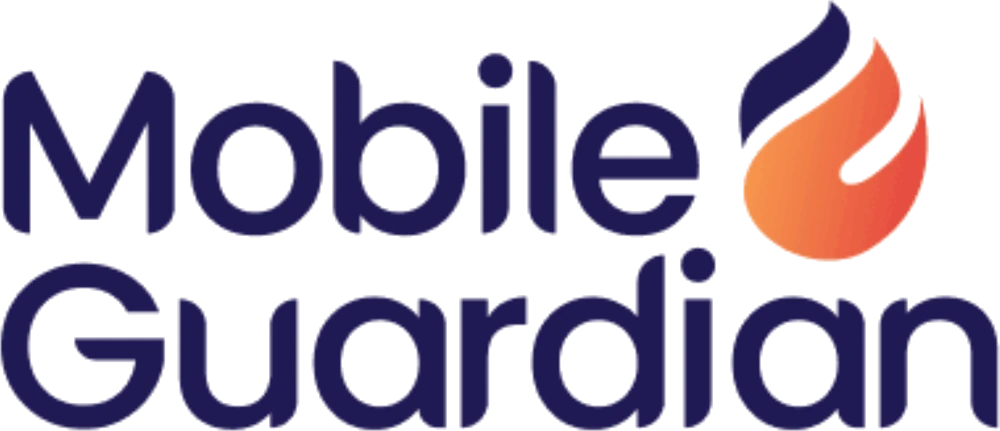

A la vanguardia de la tecnología educativa
Queremos construir, junto con aliados, una inteligencia artificial que entienda el aula.
Quiénes somos
Más de 10 años transformando la educación con tecnología
activa es socio de transformación educativa de los colegios.
Certified CanvaReseller Partner
Un solo aliado para el colegio
Dispositivos y licenciasChromebooks administradas, Google Workspace, Canva y Wayground
Contenido propioCinco plataformas alineadas a la Nueva Escuela Mexicana
Formación y acompañamientoCoach certificado y certificación oficial de Google para docentes
Soporte y gestiónMesa de ayuda con respuesta en menos de 24 horas hábiles
Un ecosistema propio
 Planeación y proyectos alineados a la NEM
Planeación y proyectos alineados a la NEM Formación continua y certificación docente
Formación continua y certificación docente Desarrollo socioemocional, guiado por psicólogos
Desarrollo socioemocional, guiado por psicólogos Inglés de 1.º de primaria hasta C1
Inglés de 1.º de primaria hasta C1Comunicación, control y gestión escolar
Trayectoria
+10años en transformación educativa
+2 Mdocentes capacitados
16Google Reference Schools acompañadas
La red de hoy
+100colegios
+25,000estudiantes
+5,000profesores
+20,000dispositivos activos
México, Centroamérica y el CaribeTodo México, con acceso a la región
La propuesta
Una alianza para una IA que entienda el aula
Una IA que entiende el aula
El aula
Más de 100 colegios usan la tecnología todos los díasAliado de IA
Construye y mejora modelos con conocimiento realMejores herramientas
Que vuelven al aula, para docentes y alumnosLo que aportamos
- Conocimiento real del aula: uso de tecnología, aprendizaje y operación escolar
- Siempre agregado y anonimizado
- Con la autorización de cada colegio
Lo que buscamos
- Aliados que desarrollen IA para la educación
- Que compartan el cuidado por la privacidad
- Proyectos concretos, definidos en conjunto
Lo que nos mueve
- Una IA que entienda la realidad educativa de México y la región
- Mejores herramientas para docentes y alumnos
- Tecnología educativa responsable
Privacidad
Datos útiles, con la privacidad primero
Lo que sí compartimos
- Conteos, tendencias y patrones agregados por nivel escolar, región y periodo
- Indicadores de aprendizaje por grupo, alineados a la NEM
- Uso de herramientas: equipos, licencias, documentos y plataformas
- Navegación y aplicaciones por categoría y en conjunto
- Métricas de operación: soporte, reparaciones, clases y eventos
Cómo cuidamos la privacidad
- Identidades protegidas: nombres, correos, teléfonos y fotos se quedan dentro del colegio
- Alumnos en grupo: cada estudiante se cuenta dentro de su grupo, nivel o región
- Contenido privado: documentos y mensajes se quedan con sus autores
- Navegación en tendencias: cada historial se queda en su colegio
- Colegios anónimos: cada colegio se identifica con un código
Agregados por grupo
Anonimizados antes de salir
Con la autorización de cada colegio
Lo que conocemos del aula
Siete ventanas al aula
El aulaLo que pasa todos los días en +100 colegios
Consola · equipos¿En qué estado está cada Chromebook?
01Consola · Workspace¿Cómo se usan Classroom, Drive y Meet?
02Páginas web¿Qué se consulta en internet para aprender?
03Aplicaciones¿Qué apps se usan en Chromebooks y tablets?
04Soporte técnico¿Qué falla, cuándo y cuánto tarda en resolverse?
05Plataformas educativas¿Qué se enseña y qué se aprende?
06Gestión escolar¿Cómo opera el colegio día a día?
07Lo que conocemos · equipos y soporte
Cómo están y cómo se atienden los equipos
Consola de Google

Por modeloPor nivelPor mes
InventarioModelo y unidad organizativa de cada equipo
SistemaVersión de ChromeOS y fin de actualizaciones
Estado del equipoBatería, almacenamiento y último acceso
Red y periféricosRegistro de red y dispositivos conectados
Salud del hardwareTelemetría y alertas proactivas de fallo
Navegador ChromeEstado de Chrome y extensiones instaladas
Mesa de ayuda
Por modeloPor tipoPor mes
Parque activoChromebooks y tablets por modelo
Tickets de soporteCuántos y de qué tipo de incidencia
Tiempos de atenciónDe la apertura del ticket a la solución
ReparacionesPor modelo y por tipo de pieza
ReemplazosEquipos sustituidos desde el stock
TemporadasIncidencias por mes del ciclo escolar
Cómo se comparte
Conteos y promedios por grupo
Cada colegio con un código, sin su nombre
Con la autorización de cada colegio
Lo que conocemos · uso digital
Cómo se usan la tecnología e internet en el aula
Google Workspace
ClassroomClases activas, publicaciones y tareas
Drive y DocumentosArchivos creados, editados y compartidos
MeetReuniones y minutos de videollamada
Cuentas y licenciasUsuarios activos y licencias en uso
Por aplicaciónPor nivelPor mes
Páginas web


Categorías de sitiosQué tipo de contenido se consulta
Sitios más visitadosDominios más consultados, en conjunto
HorarioDentro y fuera del horario escolar
Uso responsableContenido filtrado por categoría
Por categoríaPor nivelPor mes
Aplicaciones
Apps más usadasRanking de aplicaciones por nivel
Tiempo de usoPor app y por categoría de aplicación
Extensiones de ChromeInstaladas y activas en los equipos
Momento de usoDentro y fuera del horario de clase
Por appPor nivelPor mes
Cómo se comparte
Siempre en conjunto, por grupos de alumnos
Cada colegio con un código, sin su nombre
Con la autorización de cada colegio
Lo que conocemos · aprendizaje y vida escolar
Qué se aprende y cómo vive el colegio
Plataformas educativas
Temas en claseProyectos y temas por grado
AprendizajesLo que van logrando, por grupo
Marco de la NEMCampos formativos, ejes e indicadores
InglésAvance por fase del Marco Común Europeo
Por gradoPor campo formativoPor periodoPróximamente: indicadores más avanzados
Gestión escolar
ComunidadNúmero de estudiantes y maestros
Clases y horariosOrganización académica por nivel
Vida escolarExtracurriculares y eventos del ciclo
ComunicaciónAvisos a padres de familia, por tipo
Por nivelPor mesAdministración en cifras generales
Cómo se comparte
Promedios y avances por grupo
Cada colegio con un código, sin su nombre
Con la autorización de cada colegio
Próximos pasos
Lo que viene en 2027
Nuevas implementaciones y capacidadesProgramadas para el próximo año
Indicadores de aprendizaje más avanzadosEn las plataformas educativas
Más conocimiento del aulaConforme crece la red de colegios